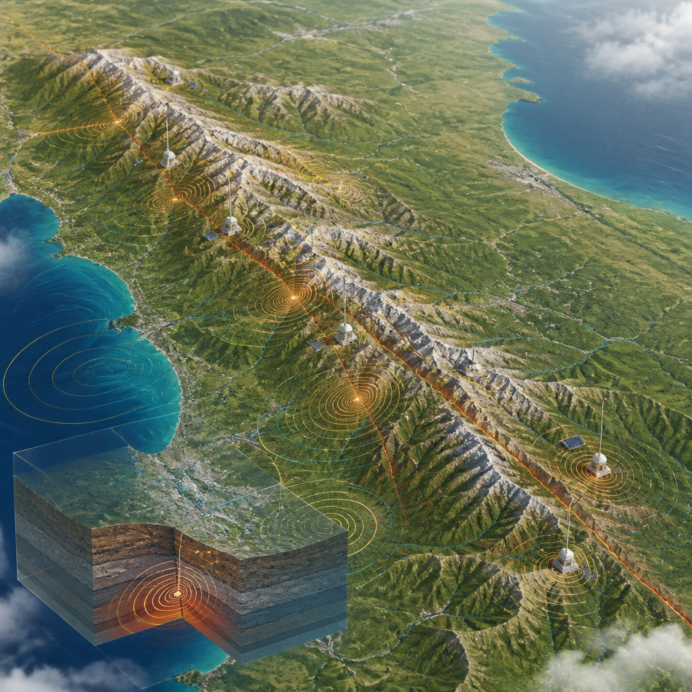
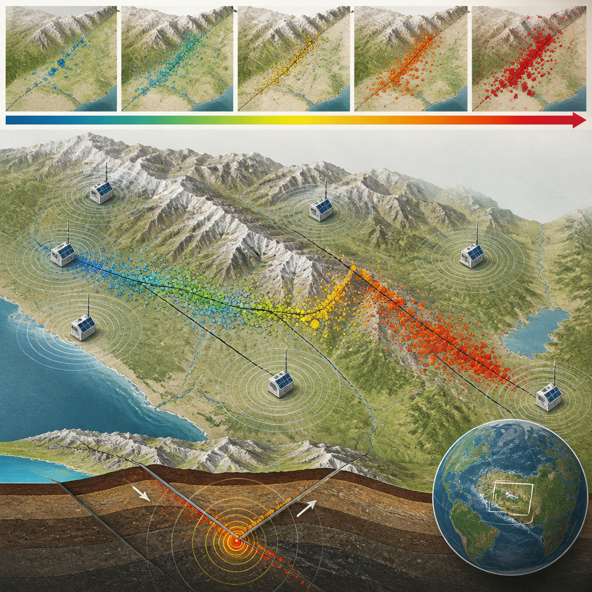

Mappe, dati e approfondimenti raccontano l’emergenza nell’Appennino centrale e il lavoro svolto durante la lunga sequenza.
Una nuova story map di INGVterremoti è dedicata ai forti terremoti che interessarono l’Italia centrale tra il 2016 e il 2017. È un racconto digitale strutturato in sei capitoli, con mappe interattive, fotografie, video, grafici, animazioni, simulazioni e approfondimenti scientifici. Al centro non ci sono soltanto le diverse fasi della sequenza sismica, cioè una successione di terremoti concentrata nella stessa area e in un periodo di tempo prolungato, ma anche la risposta dell’Istituto Nazionale di Geofisica e Vulcanologia durante l’emergenza.
Il primo terremoto avvenne alle 03:36 del 24 agosto 2016 e raggiunse magnitudo Mw 6.0, colpendo Accumoli, Amatrice e altre località al confine fra Lazio, Umbria, Marche e Abruzzo. La magnitudo Mw è una misura della grandezza del terremoto basata sull’energia liberata. L’evento causò 299 vittime, di cui 238 nella sola città di Amatrice.
Fin dalle prime ore il personale INGV si mobilitò nella Sala Operativa e sul campo. Venne allestito il Centro Operativo Emergenza Sismica, presso la Direzione di Comando e Controllo insediata a Rieti dal Dipartimento della Protezione Civile. La story map documenta le attività dei diversi Gruppi Operativi e Gruppi di Lavoro con immagini, filmati e dati provenienti dai report scientifici.
Tra le attività raccontate ci sono gli interventi nell’area epicentrale, i rilievi sul territorio e le mappe degli effetti prodotti dai terremoti. L’epicentro è il punto sulla superficie terrestre situato sopra l’origine del terremoto. Il materiale raccolto permette di seguire sia l’evoluzione degli eventi sia il lavoro svolto per osservarli, localizzarli e descriverne gli effetti.

Dopo una fase in cui la sismicità sembrava diminuire, tra settembre e ottobre la sequenza si riattivò estendendosi verso nord. Il 26 ottobre furono registrati due terremoti a poche ore di distanza, di magnitudo Mw 5.4 e Mw 5.9, con epicentri in provincia di Macerata, tra Visso, Ussita e Castelsantangelo sul Nera. Non causarono vittime, ma diffusero panico tra la popolazione.
Il 30 ottobre, alle 07:40, avvenne il terremoto di magnitudo Mw 6.5 nei pressi di Norcia, il più forte in Italia dopo l’evento in Irpinia e Basilicata del 1980. L’impatto sul patrimonio architettonico fu devastante: crollò la Basilica di San Benedetto a Norcia e venne distrutta la frazione di Castelluccio. Il sisma fu risentito in tutta Italia, da Bolzano a Napoli, e in modo particolare a Roma.
Il terremoto del 30 ottobre aggravò i danni nell’area già colpita, fino ad Arquata del Tronto e Amatrice. Non ci furono vittime, ma i Comuni danneggiati salirono a 131 e gli effetti più gravi interessarono Marche, Lazio, Umbria e Abruzzo. Nei mesi successivi furono localizzati molti altri eventi; il 18 gennaio 2017, in provincia dell’Aquila, quattro scosse di magnitudo pari o superiore a 5.0 si verificarono nell’arco di quattro ore.
Dal 24 agosto 2016 al 31 luglio 2017, le stazioni permanenti della Rete Sismica Nazionale Integrata dell’INGV e quelle temporanee installate durante l’emergenza registrarono oltre 82.000 terremoti. La sequenza interessò un settore lungo circa 80 chilometri dell’Appennino centrale.
La story map affronta anche il quadro sismotettonico, cioè l’insieme delle strutture geologiche e dei processi che spiegano la distribuzione dei terremoti in un’area. Il settore coinvolto è considerato a pericolosità sismica molto alta e in passato è stato interessato da forti terremoti e importanti sequenze. Gli eventi del 2016-17 si inserirono fra la sequenza di Colfiorito del 1997 e quella dell’aquilano del 2009.
Uno dei temi approfonditi riguarda il diverso danneggiamento di Amatrice e Norcia. A fronte di valori di scuotimento del suolo equiparabili, senza amplificazioni geologiche locali o effetti di sito, i risultati furono radicalmente diversi. Amatrice subì danni ingenti fino al X-XI grado della Scala Mercalli, mentre a Norcia i danni all’edilizia privata arrivarono fino al VI grado e non ci furono vittime. La Scala Mercalli descrive gli effetti osservati di un terremoto su persone, edifici e ambiente. Secondo l’analisi proposta, la causa principale fu la diversa vulnerabilità degli edifici, legata anche alla differente familiarità delle comunità con i forti terremoti.
L’ultimo capitolo si concentra sulla comunicazione durante l’emergenza. Dopo il terremoto del 30 ottobre, alcuni media diffusero senza riscontro ufficiale la notizia di una magnitudo 7.1. La confusione in rete alimentò teorie del complotto e accuse infondate di manipolazione dei dati. Per contrastare la disinformazione, l’INGV accelerò nel 2018 la pubblicazione automatica delle stime provvisorie per i terremoti di magnitudo superiore a 3, entro circa due minuti dall’evento.
La story map riunisce quindi memoria, dati e strumenti di analisi: un percorso per comprendere una lunga emergenza sismica, il lavoro tecnico e scientifico che l’ha accompagnata e le questioni aperte nella comunicazione verso il pubblico.
Questo articolo l'hai letto sul blog di Meteo Radar: un'app che ti mostra da dove vengono i numeri, invece di limitarsi a dartelo. E ogni mattina ne trovi uno nuovo come questo.